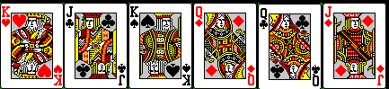
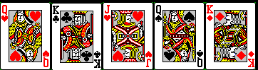

Here is the first set of cards that you chose from:

And here is the second set of cards you were shown:

Notice that not only is your card missing,
but all the original cards are missing.
What's interesting is that most people do not
notice that all the cards are missing.
Instead. people only notice that
the card they attended to is missing.
People only remember the suit-value combination
of a card they attended to.
People don't attend to the other cards,
and so don't remember the other suit-value combinations.
Therefore people don't notice when all the cards
have changed.